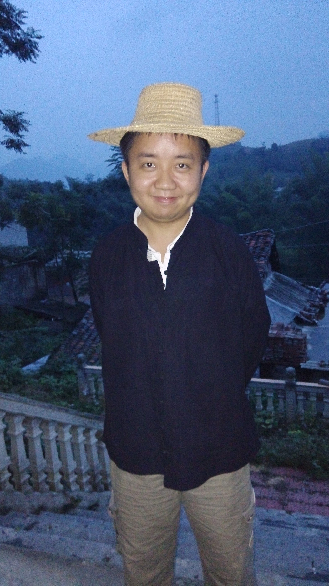

Me
Dear friends, welcome to my personoal webpage! My name is Rui Luo (罗睿). I was born in Moyang (沫阳镇), which is a small town about 20 miles away from the Five-hundred meter spherical telescope (FAST). I grew up in Luodian (罗甸), a county in South Guizhou, China.
Now I am a PhD candidate at Department of Astronomy, Peking University. My research projects center on a new astronomical phenomena called Fast Radio Burst (FRB), including theoretical and observational aspects. My PhD thesis is focusing on FRB luminosity function and related statistical studies. Meanwhile, I’m also one member of FRB searching team based on PKU-XAO-YNAO collaboration.
My hobbies cover different aspects widely. For sports, I like football(soccer), swimming, badminton, table tennis, e-sports, etc. Besides, I love hiking and reading, I believe either my body or soul should be on the way after all. During my free time, I also enjoy listening to light music and think about the Universe, who we are, why we here, and where we go …
